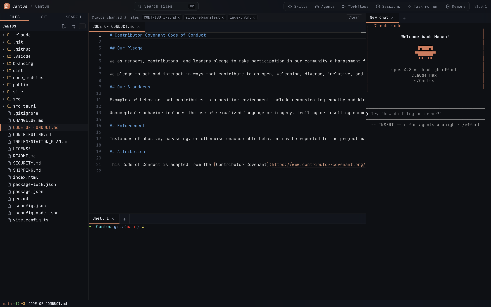

The four-pane workspace
File tree, Monaco editor, the Claude Code CLI in an integrated terminal, and an embedded shell — sharing one window and one project state.

One app, in concert
Editor, terminal, git, and Claude Code sharing one UI and one project state. A full IDE, not a sidebar or session manager.
Claude Code in a real terminal
The claude CLI runs in a backend-spawned PTY — full-width, themed, and resumable. This is the actual Claude Code CLI, not a chat wrapper.
Monaco editor
The same engine as VS Code — syntax highlighting, multi-cursor, VS Code-style inline and split diff views, all inside the native Tauri window.
Drag files into Claude
Drop any file onto the terminal to insert its path straight into the Claude Code prompt. Zero friction context hand-off.
Per-hunk & per-line git staging
Split and inline diff views with per-hunk and per-line stage & discard, powered by libgit2 patches — more granular than a read-only viewer.
Built-in git
Branch switcher, stage, commit, and discard — via libgit2, no shelling out. Works entirely offline and locally.
Resumable sessions
Your Claude Code sessions for the project are listed and resumable from the sessions view — pick up where Claude left off.
Capability-aware task runner
Describe a task; Claude summarizes which skills & agents apply, builds a .claude workflow, and runs it — orchestrating itself.
Learned memory
A local SQLite + FTS5 store distills the quirks each run teaches and surfaces the relevant ones on the next — no cloud, no vectors.
IDE monitor
Status-bar CPU & memory usage, running Claude process count, and token usage today and total — a live resource view baked into the IDE.
Local-first & private
Your source never leaves the machine except Claude's own model API calls. No telemetry, no account, no subscription.
Composed, not reinvented
Cantus wraps mature, battle-tested components — and builds only the glue and the genuinely novel parts.
Frequently asked
Common questions about Cantus as a Claude Code GUI and IDE.
- Is Cantus a GUI for Claude Code?
- Yes. Cantus is an open-source macOS desktop app that gives Claude Code a full IDE workspace — Monaco editor, a file tree, and the real
claudeCLI running in an integrated terminal, all in one native window. It is not a chat wrapper or a session manager. - Does Cantus use the real Claude Code CLI?
- Yes. The backend spawns the actual
claudeCLI in a PTY (pseudo-terminal) and streams its output through xterm.js. Sessions are resumable, full-width, and behave exactly as they would in a standalone terminal. - Is Cantus free and open source?
- Yes. Cantus is MIT-licensed and free. The source is at github.com/manan45/Cantus. No account, no subscription, no telemetry.
- Does Cantus run on Intel Macs, Windows, or Linux?
- The current release (v1.2.0) targets macOS on Apple Silicon. Cross-platform support (Intel Mac, Windows, Linux) is on the roadmap but not yet shipped.
- Is Cantus built on Electron?
- No. Cantus is built on Tauri 2 with a Rust backend, using the OS-native webview — not Chromium/Electron. The result is a small, native binary with low memory overhead.
- How do I install Cantus?
- Via Homebrew:
brew tap manan45/cantusthenbrew install --cask cantus. Or download the .dmg from the GitHub releases page. The binary is currently unsigned — on first launch, right-click the app and choose Open.